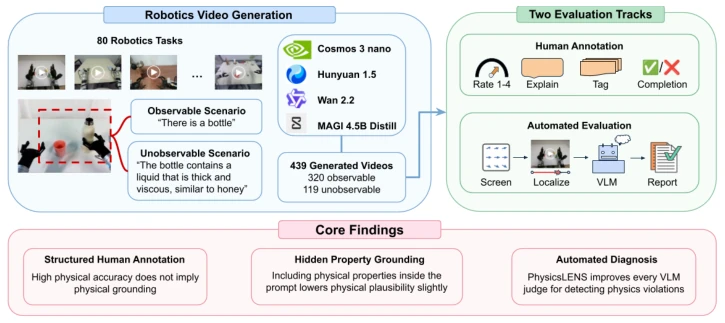
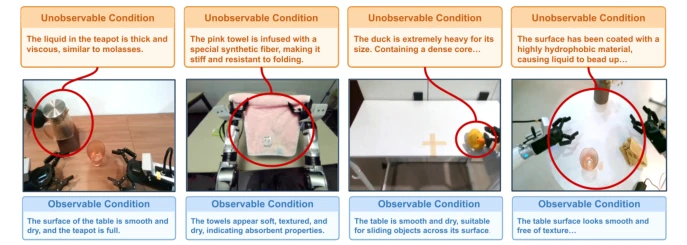
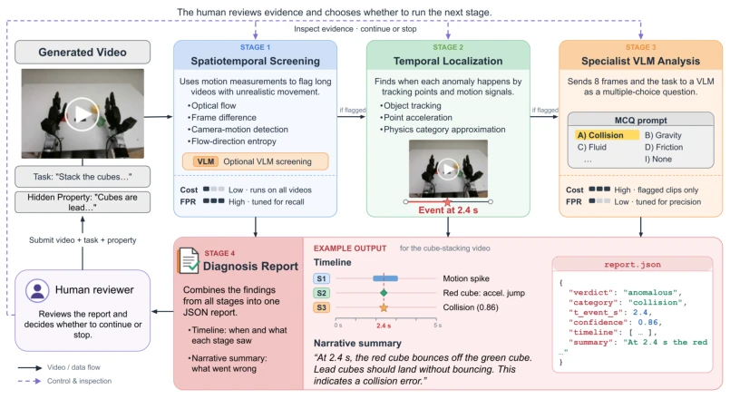
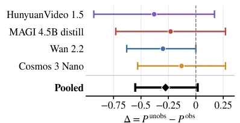
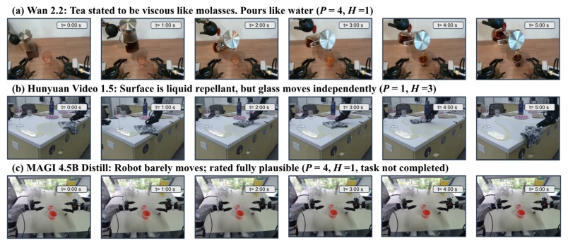
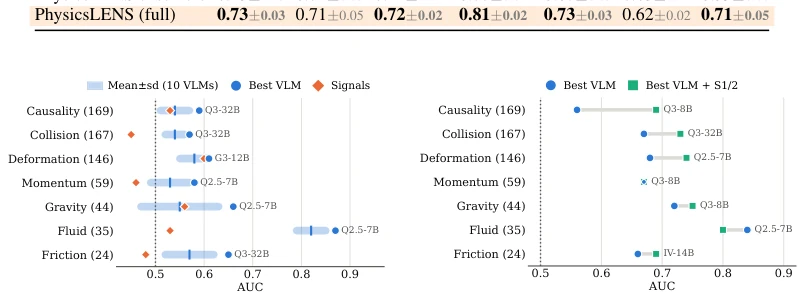
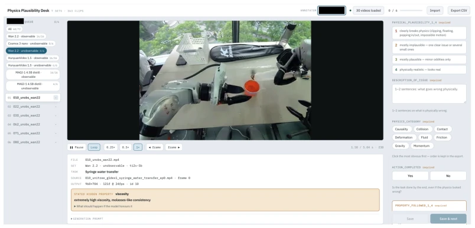
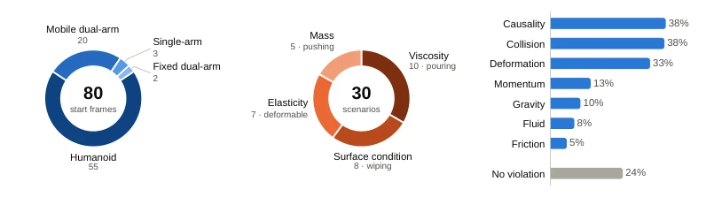

This paper pours cold water on video generation models that claim to be "physical world simulators": looking plausible, actually all "physics blind". The authors developed PhysicsLENS, specifically designed to test whether models truly understand physics or just "speak based on images". The results were stark: among 47 videos that appeared physically reasonable, 34 completely ignored the hidden attributes set in the text (such as pouring water as if it were syrup). Most ironically, some videos generated by models that completely ignored the instructions actually looked more "visually pleasing". This indicates that existing evaluation systems are too superficial, focusing only on visual fidelity while ignoring the "invisible" constraints of physical logic. Although the authors created an automated evaluation pipeline, when facing "hidden attributes" which are somewhat elusive, VLMs still often guess blindly. This work, while not solving model defects, at least tears off the "facade" of "physical consistency", reminding us: do not be deceived by realistic images, models may not even have memorized Newton's laws.
研究动机Motivation
视频生成模型在具身智能（Embodied AI）中潜力巨大，可用于机器人学习、规划和评估（Yang et al., 2024; NVIDIA, 2025a）。然而，现有模型常生成违反物理原理的视频，如忽略摩擦力、动量守恒或物体恒存性，导致其作为预测环境的可靠性存疑。现有基准测试（如VideoPhy-2, Bansal et al., 2025; PhyGenBench, Meng et al., 2025）多关注视觉质量或常识物理，无法区分模型是基于视觉先验生成的“合理”行为，还是真正遵循了文本中指定的物理属性。特别是当物理属性（如粘度、质量）无法从单帧图像推断时，模型极易产生“物理属性盲视”（Physical Property Blindness）。例如，一个看起来像水的液体，文本却要求它是糖浆，模型往往生成水状流动，却因视觉合理而得分高。现有工作（如Physion++）侧重于从交互推断属性，而缺乏从文本属性生成交互的评估。因此，亟需一个能分离“视觉合理性”与“属性遵循性”的基准，以揭示模型在隐式物理约束下的真实能力。
Video generation models hold great potential in Embodied AI, applicable to robot learning, planning, and evaluation (Yang et al., 2024; NVIDIA, 2025a). However, existing models often generate videos violating physical principles, such as ignoring friction, conservation of momentum, or object permanence, casting doubt on their reliability as predictive environments. Existing benchmarks (e.g., VideoPhy-2, Bansal et al., 2025; PhyGenBench, Meng et al., 2025) mostly focus on visual quality or commonsense physics, unable to distinguish whether models generate "reasonable" behavior based on visual priors or truly follow physical attributes specified in the text. Especially when physical attributes (such as viscosity, mass) cannot be inferred from a single frame image, models are prone to "Physical Property Blindness". For example, a liquid that looks like water, but the text requires it to be syrup; the model often generates water-like flow, yet scores high due to visual plausibility. Existing work (e.g., Physion++) focuses on inferring attributes from interaction, lacking evaluation of generating interaction from text attributes. Therefore, there is an urgent need for a benchmark that can separate "visual plausibility" from "attribute adherence" to reveal the model's true capabilities under implicit physical constraints.

Figure 1: Overview of PhysicsLENS: robotics video generation, evaluation, and core findings.

Figure 2: Example matched prompt pairs. Each pair shares the initial frame and task. The observable description (blue) states what the frame shows; the unobservable description (orange) replaces it with a latent property that departs from what the frame suggests.
PhysicsLENS constructs a benchmark framework containing matched scene pairs, the core of which is controlling variables: keeping the initial frame (Conditioning Frame) and task instructions unchanged, only changing physical attributes in the text description (such as changing "ordinary water" to "high-viscosity syrup"). Data originates from 11 public robot datasets, covering seven physical domains: collision, gravity, momentum, friction, deformation, fluid, and causality. The evaluation process is divided into two parts: first, human annotation, scoring the generated 439 videos on physical plausibility (P), task completion (A), and hidden attribute adherence (H); second, an automated diagnostic pipeline. This pipeline adopts a four-stage strategy: first, preliminary screening through motion measurement (optical flow, DINOv2 embedding changes); second, utilizing trajectory tracking to locate potential violation points; next, calling VLM to verify specific physical errors (such as object penetration, disappearance); finally, fusing multi-source evidence to generate a JSON report. This design aims to solve the hallucination and bias problems existing when relying solely on VLM to judge physical plausibility, improving the robustness of evaluation by combining quantifiable motion signals with targeted VLM questioning.

Figure 3: Evidence flow through the PhysicsLENS diagnostic pipeline.
Experiments were conducted on four video generation models (Wan 2.2, Cosmos 3 Nano, HunyuanVideo 1.5, MAGI 4.5B Distill) for the generation and evaluation of 439 videos. Results show that among 119 videos containing hidden attributes, 47 were rated physically reasonable by humans, but 34 of them (72%) did not follow the attributes specified in the text, confirming the prevalence of "Physical Property Blindness". Additionally, specifying hidden attributes only led to a slight decrease in physical plausibility (average 0.28 points), and was statistically insignificant, indicating that models tend to ignore text constraints and rely on visual priors. In terms of automated evaluation, the pipeline combining motion signals and VLM performed well on physical plausibility (AUC 0.72) and task completion (AUC 0.81), but still faced challenges in judging hidden attribute adherence (AUC 0.71) and specific violation attribution. This indicates that current VLMs still have limitations in fine-grained physical reasoning, and relying solely on the visual performance of generated videos cannot guarantee the correctness of physical logic.

Figure 5: Paired change ∆= P unobs −P obs per model and pooled, with 95% bootstrap intervals over scenarios.

Figure 6: Three annotated failure cases (six frames each). P: physical plausibility; H: hidden- property adherence (both 1–4). (a) A clean, realistic pour that ignores the stated viscosity. (b) A video rated as following the stated property that is nevertheless physically implausible. (c) A nearly static video rated fully plausible.

Figure 8: Detection accuracy by physics family: AUC for videos with this family vs. the 106 videos with no violation (dotted line is chance).
其他图片Other Figures

Figure 9: The human-annotation interface. Annotators assess physical plausibility and action com- pletion for every generated clip, identify visible violations when present, and evaluate property adherence for unobservable scenarios.

Figure 10: Dataset composition. (a) Robot type in the 80 starting frames. Mobile dual-arm robots are wheeled platforms (AlphaBot 2, Galbot G1, AgiBot G1, and Mobile ALOHA). (b) Property stated in each unobservable scenario and the task it is paired with. (c) Share of the 439 videos with each violation label. As in Appendix C, Contact is merged into Collision. A video can have several labels (66% of videos with a violation have more than one), so the violation bars sum to over 100%.